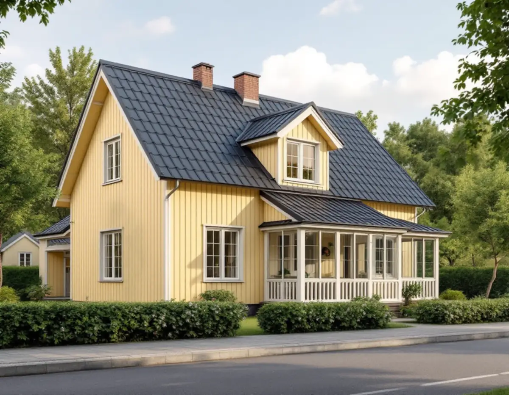
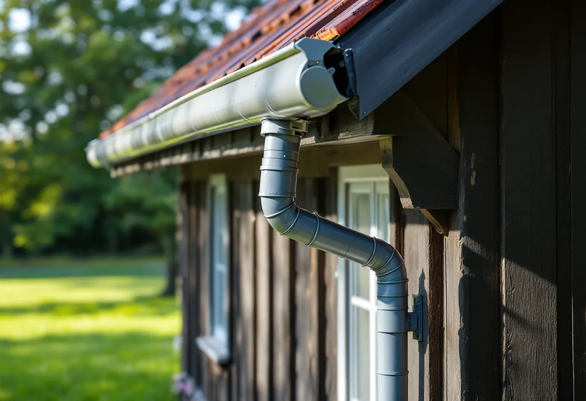
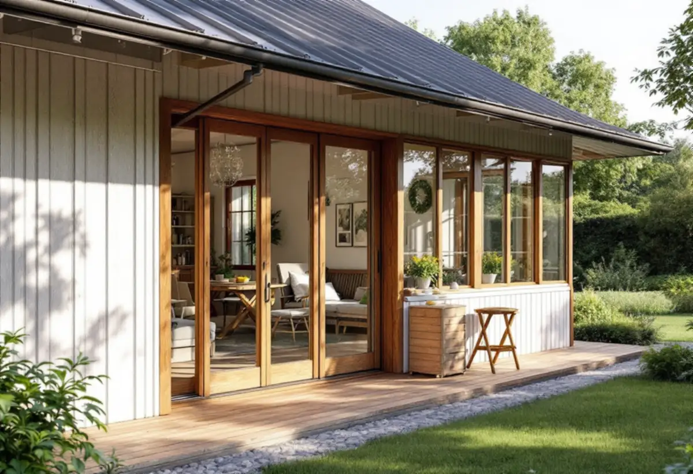

Platsbesök
Gratis besök där vi ser på tak, kupor och rännor.
Spångas villastäder växte fram kring järnvägen och består av individuellt utformade hus med glasverandor, kupor och snickarglädje. Geal Entreprenad AB har egna plåtslagare som lägger plåttak, byter hängrännor och stuprör och kläder in kupor och verandatak på villorna i Solhem, Bromsten och Flysta.

Stadens vägledning Varsam utveckling av småhus- och villaområden beskriver hur små stationssamhällen uppstod när järnvägen byggdes ut och hur några av dem, till exempel Spånga, på 1910-talet fick status som municipalsamhällen. Hässelby villastad, Bromsten, Nälsta, Solhem, Flysta och Sundby räknas till typen villastad, och i Solhem fick bara en tiondel av de stora tomterna bebyggas.
Stadsmuseets inventering av Älvsjö villastad nämner att fastighetsbolaget AB Hem på landet redan hade anlagt Solhem innan bolaget köpte mark i Älvsjö 1908. Villastäderna var privat organiserade och fick enligt vägledningen en brokigare bebyggelse än stadens egnahemsområden, med trä som dominerande fasadmaterial och glasverandor, takkupor och snickarglädje som gav variation.

Boverket skriver att du inte behöver bygglov för att byta taktäckningsmaterial på ditt småhus, även till ett tak som ser annorlunda ut. Ändringen ska ändå göras varsamt och anpassas till omgivningen, och innan du byter ska du kontrollera att taket klarar den nya belastningen. Undantagen gäller inte där utökad lovplikt gäller, till exempel nära eller inom särskilt värdefulla byggnader och områden.
I vägledningens tabell är Solhem markerat som kulturhistoriskt värdefull miljö, medan Bromsten, Flysta och Sundby saknar sådan markering. Stadsmuseets karta visar vad som gäller för det enskilda huset. Vi tittar på kartan innan vi föreslår ett nytt material, och väljer hellre plåt och falsning som passar husets tid.
Vägledningen påminner också om att många villor på 1960- och 1970-talen ersattes av grupper av enhetliga småhus, och den råder att förändringar i sammanhållna grupper av villor, radhus och kedjehus utformas utifrån ett helhetsperspektiv. Byter du plåt på ett radhus i en sådan grupp är det därför bra att prata med grannarna om material och kulör.
På de stora villatomterna i Spånga leds vattnet från taket via rännor och stuprör ut på tomten. Stockholm Vatten och Avfall skriver att dag- och dräneringsvatten inte får kopplas till kommunens spillvattenledning, och att du som fastighetsägare ansvarar för ledningarna på din egen tomt. Byter vi stuprör kontrollerar vi därför vart vattnet tar vägen.
Rännor som har sjunkit, läcker i skarvarna eller rinner över vid kraftigt regn byter vi, och vi anpassar storleken efter takytan. På kupor och verandatak lägger vi ny plåt och nya bleck. Ska hela taket bytas finns mer under takläggare i Spånga.
Stadens områdesfakta för 2025 visar att 1 946 av 3 470 bostäder i Solhem är småhus med äganderätt. I Bromsten är 916 av 3 826 bostäder småhus med äganderätt och i Flysta 657 av 833. Det är alltså oftast villaägaren själv som beställer plåtarbetet, och då gäller rotavdraget för småhus.
Vi kommer på ett gratis platsbesök, ser på tak, rännor och detaljer och lämnar ett skriftligt kostnadsförslag med det som behöver göras. Mer om tjänsten finns under plåtslagare.

Gratis besök där vi ser på tak, kupor och rännor.
Vi kontrollerar Stadsmuseets klassning av huset.
Vi ser över att taket klarar ett nytt material.
Plåt, rännor och stuprör anpassade efter huset.
Omläggning, bleck, rännor och stuprör.
Kontroll av avvattningen och skötselråd.
Äger du ett småhus räknar Skatteverket det som rotarbete att reparera, rengöra eller byta ut plåttak, hängrännor och stuprör, att byta fönsterbleck och att montera och montera ner byggnadsställningar i samband med arbetet. Avdraget är 30 procent av arbetskostnaden, högst 50 000 kronor per person och år, och material och resor ger inget avdrag. Geal drar avdraget direkt på fakturan.
Takets yta, lutning och antal kupor, om plåten läggs om eller lagas, rännornas och stuprörens längd, verandatak och bleck samt ställning. Efter ett gratis platsbesök får du ett skriftligt kostnadsförslag.
Plåttak, hängrännor och beslag.
Plåtslagare i Stockholm →Takbyte, takbesiktning och plåtarbeten.
Takläggare i Spånga →Solhem, Bromsten, Flysta och Sundby.
Takrenovering i Spånga →Solhem, spåren och de stora tomterna.
Attefallshus i Spånga →Äldre villor, duschplats och bostadsanpassning.
Badrumsrenovering i Spånga →Riva och bygga nytt hus.
Byggföretag i Spånga →Bättra eller måla om hela villan.
Fasadmålning i Spånga →Trävillor och gruppbyggda radhus.
Fasadrenovering i Spånga →Villor, verandor och nya öppningar.
Fönsterbyte i Spånga →Villorna i Solhem.
Fönsterrenovering i Spånga →Massivt, lamell, fanér eller laminat.
Golvläggare i Spånga →Breda originalgolv och patina.
Golvslipning i Spånga →Solhem, villastäder och kök i flera lager.
Köksrenovering i Spånga →Solhems färgskala och villorna kring stationen.
Målare i Spånga →Väggar, vindar och verandor i villastäderna.
Snickare i Spånga →Solceller, radarn och Solhem.
Takbyte i Spånga →Tapet som passar husets tid.
Tapetsering i Spånga →Villastäderna, stommen och ventilationen.
Totalrenovering i Spånga →